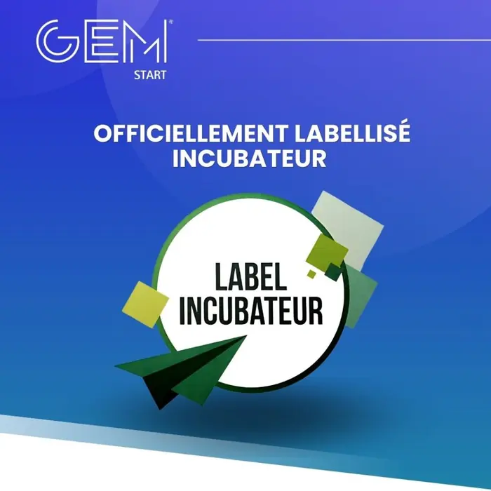
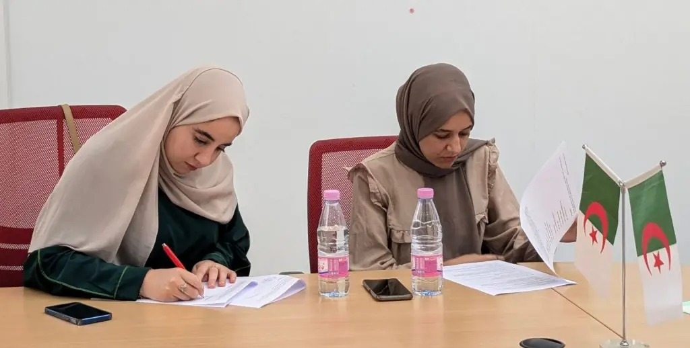
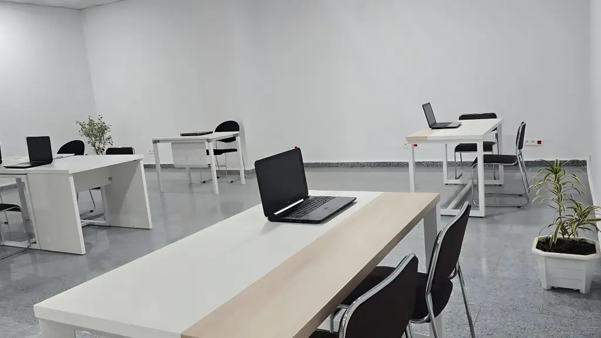

Entrepreneuriat
GEM-Start, l’incubateur labellisé.
Créé avec l’EFTG-SUP au sein du groupe GEM, GEM-Start accompagne les étudiants et les alumni porteurs de projet, de l’idée à l’entreprise. En septembre 2024, il a obtenu le label « Incubateur » de la commission nationale du Ministère de l’Économie de la connaissance, des start-ups et des micro-entreprises.

Mission
Transformer une idée en entreprise.
GEM-Start est l’incubateur du Groupe des Écoles de Management, créé par MDI Algiers Business School avec l’EFTG-SUP. Il s’adresse aux étudiants et aux diplômés des deux écoles qui veulent créer leur entreprise, et les accompagne de l’idéation jusqu’au lancement.
En septembre 2024, la commission nationale du Ministère de l’Économie de la connaissance, des start-ups et des micro-entreprises lui a attribué le label « Incubateur ». Ce label reconnaît la qualité de l’accompagnement et inscrit les projets incubés dans l’écosystème national des start-ups.
L’incubateur prolonge la pédagogie de l’école : l’esprit entrepreneurial figure parmi les compétences visées dès la Licence en Management, et le Parcours Étudiant-Entrepreneur donne six mois pour passer du projet à l’entreprise.

Programmes
Cinq programmes, un parcours.
De l’idée au lancement, chaque programme correspond à une étape du projet. Le comité GEM-Start oriente chaque porteur vers le bon point d’entrée.
Challenge de trois mois
Entreprendre au féminin
Un challenge de trois mois réservé aux porteuses de projet, pour structurer puis présenter un projet d’entreprise. En mars 2024, ses ateliers ont porté sur le management bienveillant, le pitch et l’éducation financière.
Idéation
IDÉELAB
Le programme d’idéation : passer d’une intuition à un projet formulé, confronter l’idée à son marché, construire une première proposition de valeur avant d’entrer en incubation.
Accélération
BOOSTUP
Le programme d’accélération pour les projets déjà structurés : modèle économique, plan de financement et préparation au lancement.
Compétition annuelle
Startup-Day
La compétition annuelle de projets, organisée avec la junior entreprise MMA – Marketing Méditerranée Algérie : les équipes étudiantes présentent leur startup devant un jury.
6 mois
Parcours Étudiant-Entrepreneur
Six mois d’accompagnement personnalisé, ateliers en présentiel et en ligne, accès au coworking et aux services de l’incubateur, jusqu’au pitch devant un jury et des investisseurs.
La fiche du parcoursRessources
Ce que l’incubateur apporte.
Un projet incubé bénéficie d’experts, d’un lieu de travail et d’un réseau : les trois conditions pour avancer vite sans se disperser.
- Des experts en stratégie, en finance, en marketing et en droit, mobilisés selon l’étape du projet
- Un espace de coworking équipé sur le campus de Chéraga, accessible aux projets incubés
- La mise en relation avec les entreprises partenaires de l’école, la junior entreprise MMA et le réseau alumni
- Des ateliers en présentiel et en ligne, et les événements liés à la création d’entreprise
- Un comité GEM-Start qui sélectionne les projets et suit leur avancement
- Le label « Incubateur » obtenu en septembre 2024, qui inscrit les projets dans l’écosystème national des start-ups
Conditions d’accès
Trois conditions pour candidater.
Un porteur, un projet et un passage devant le comité : trois conditions pour entrer dans l’un des programmes de l’incubateur.

- Être étudiant ou alumni
De MDI ou de l’EFTG-SUP, les deux écoles du groupe GEM. Les candidatures venant d’autres établissements sont étudiées sur accord de la direction.
- Avoir un projet
Une idée formulée pour IDÉELAB, un projet structuré pour BOOSTUP ou le Parcours Étudiant-Entrepreneur : l’important est de pouvoir dire à qui il s’adresse et ce qu’il change.
- Le défendre devant le comité
Le comité GEM-Start reçoit les porteurs de projet, évalue la faisabilité et l’engagement de l’équipe, puis oriente vers le programme adapté.
Présentez votre projet par e-mail en indiquant votre formation, votre promotion et l’étape à laquelle vous en êtes ; l’école vous recontacte pour un passage devant le comité GEM-Start.

Journée Étudiant-Entrepreneur
Deuxième édition, douze mois d’incubation à gagner.
En mai 2024, la deuxième journée Étudiant-Entrepreneur a réuni sur le campus des entrepreneurs, des partenaires et les équipes étudiantes porteuses de projet : tables rondes avec des entrepreneurs et présentation des projets devant le jury.
Les lauréats ont remporté douze mois d’incubation : six mois chez GEM-Start, sur le campus de Chéraga, puis six mois à l’École nationale polytechnique (ENP).
Présenter votre projet
Vous avez un projet ? Parlons-en.
Étudiant, étudiante ou diplômé(e) de MDI ou de l’EFTG-SUP : écrivez-nous ou appelez l’école pour présenter votre projet au comité GEM-Start. Les candidatures d’autres établissements sont étudiées sur accord de la direction.
